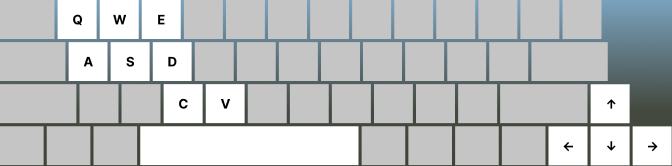

⏱ 60.0
🎯 0/16
★ 0
CARGENEDDON · 60s
🎯 Ram 16 pedestrians = 100 pts each
🔫 Shoot enemy cars = +25 pts each kill
⏱ Each ped killed adds +5s to the timer
🎯 Ram 16 pedestrians = 100 pts each
🔫 Shoot enemy cars = +25 pts each kill
⏱ Each ped killed adds +5s to the timer
Camera
Sun & sky
Clouds
Track
Fog
Audio Pitch
PRESS R TO RESPAWN
(−5 LEVELS) TAP RESET TO RESPAWN
(−5 LEVELS)
(−5 LEVELS) TAP RESET TO RESPAWN
(−5 LEVELS)
SHATTER TUNE[T] hide
POPCORN STATUS DERBY
Drive, shoot. Ram opponents to steal their levels. Shoot headlight projectiles that play the Popcorn melody. The higher your status, the better car you unlock on regen.
DRIVE
| ↑ / W | Accelerate |
| ↓ / S | Brake / Reverse |
| ← → / A D | Steer |
| Space | Handbrake drift |
COMBAT
| Q | Shoot — each shot plays a Popcorn note |
| E | Impossible police turn |
CAMERA & UI
| V | Camera modes (chase / interior / side / top / spectator) |
| R | Respawn car (−5 lvl, new random design) |
| M | Mute / unmute all audio |
| C | Redesign your car live with drag handles |
| 🤖 AUTO | AI takes the wheel, camera switches cinematically |
MODES
| Cargeneddon | 60sec. — ram 16 pedestrians, shoot rival cars. Click the red logo to start / stop. |

TIME UP
Score: 0 · Kills: 0/16
SEDAN
STANDARD · L1
Length:·
Width:·
Height:·
Wbase:·
Track:·
Wheel Ø:·
Hlight:·
Tail:·
Fender:·
0 km/h
1